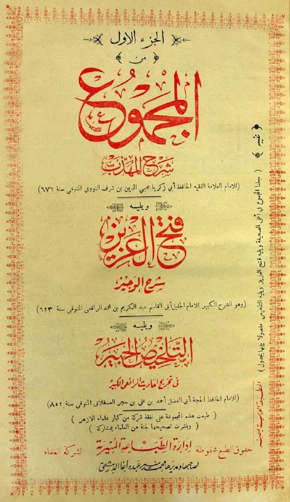
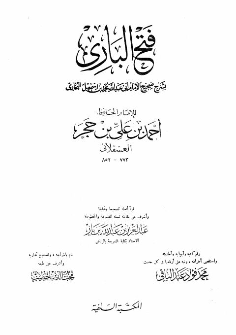
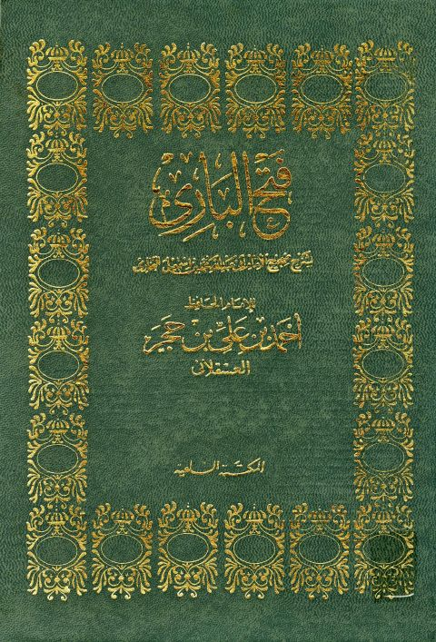

المكتبة السلفية
Publisher
Resources

المجموع شرح المهذب النووي ويليه الشرح الكبير للرافعي ويليه تلخيص الحبير لابن حجر المجموع شرح المهذب النووي ويليه الشرح الكبير للرافعي ويليه تلخيص الحبير لابن حجر يحيى بن شرف النووي • عبد الكريم بن محمد الرافعي • أحمد بن علي بن حجر العسقلاني
فتح الباري بشرح صحيح الإمام أبي عبد الله محمد بن إسماعيل البخاري -ط السلفية- أجزاء فتح الباري بشرح صحيح الإمام أبي عبد الله محمد بن إسماعيل البخاري -ط السلفية- أجزاء أحمد بن علي بن حجر العسقلاني هدي الساري مقدمة فتح الباري بشرح صحيح البخاري- السلفية
هدي الساري مقدمة فتح الباري بشرح صحيح البخاري- السلفية
أحمد بن علي بن حجر العسقلاني
هدي الساري مقدمة فتح الباري بشرح صحيح البخاري- السلفية
هدي الساري مقدمة فتح الباري بشرح صحيح البخاري- السلفية
أحمد بن علي بن حجر العسقلاني

فتح الباري شرح صحيح البخاري -ط. السلفية- مدمجة فتح الباري شرح صحيح البخاري -ط. السلفية- مدمجة أحمد بن علي بن حجر العسقلاني